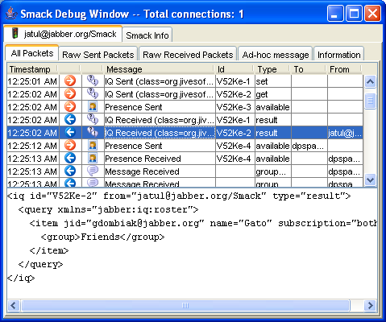
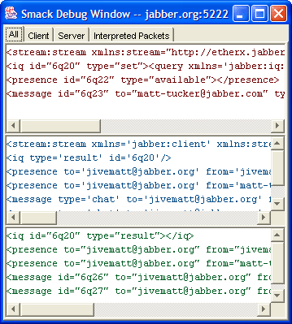

Smack包含两个内置的调试控制台，它可以让您跟踪客户端和服务器的XML通信量。smack.jar中的轻量型的调试器和smackx-debug.jar中的增强型的调试器。
调试模式可以通过两种方式激活：
- 添加如下代码在创建新的连接之前：
XMPPConnection.DEBUG_ENABLED = true;
- 设置Java系统属性smack.debugEnabled为true。这个系统属性可以在命令行设置：
java -Dsmack.debugEnabled=true SomeApp
如果您想明确地中止您应用程序的调试模式，包括使用命令行参数，在打开新连接之前添加如下行到您的应用程序：
XMPPConnection.DEBUG_ENABLED = false;
Smack使用如下逻辑来决定调试器控制台的使用：
- 它将会首选尝试使用Java系统属性smack.debuggerClass中特定的调试器类。如果您需要开发您自己的调试器，实现SmackDebugger接口，然后在命令行设置系统属性如下：
java -Dsmack.debuggerClass=my.company.com.MyDebugger SomeApp
- 如果步聚1失败了，那么Smack会尝试使用增强型的调试器。文档smackx-debug.jar中包含增强型的调试器。因此您需要将这个jar文件放置到类路径中。在某些情况下空间是一个问题您可能只想使用 smack.jar而增强型的调试器将不可用。
- 如果前两步都失败了则只能使用轻量型的调试器。轻量型的调试器在当您的内存量低时是一个很好的选择。

当调试模式激活时，会出现一个包含新创建的连接标签的调试窗口。这个窗口会包含如下信息：
- 连接标签(Connection tabs)：-- 每个标签显示相关连接的调试信息。
- Smack信息标签(Smack info tab )： -- 显示Smack的信息(如：Smack版本，已安装的控件等等)。
连接标签会包含如下信息:
- 所有的Packet -- 显示Smack解析的已发送和已接收的packet信息。
- 未加工的发送的Packet -- Smack产生的和发送到服务器的未加工的XML通信量。
- 未加工的接收的Packet -- 服务器发送到客户端的未加工的XML通信量。
- 特别消息 -- 允许发送任意类型的特别packet。
- 信息 -- 显示连接状态和统计。

当调试模式激活时，当每个新连接创建时会出现一个调试窗口。这个窗口会包含如下信息：
- 客户端通信量(红色文本)(Client Traffic) -- Smack产生的和发送到服务器的未加工的XML通信量。
- 服务器通信量(蓝色文本)(Server Traffic) -- 服务器发送到客户端的未加工的XML通信量。
- 已经解析的packet(绿色文本)(Interpreted Packets) -- 显示Smack解析的来自服务器的XML packet。
右击面板任意位置会弹出一个菜单，您可以将内容复制到系统剪贴板或清除面板的内容。